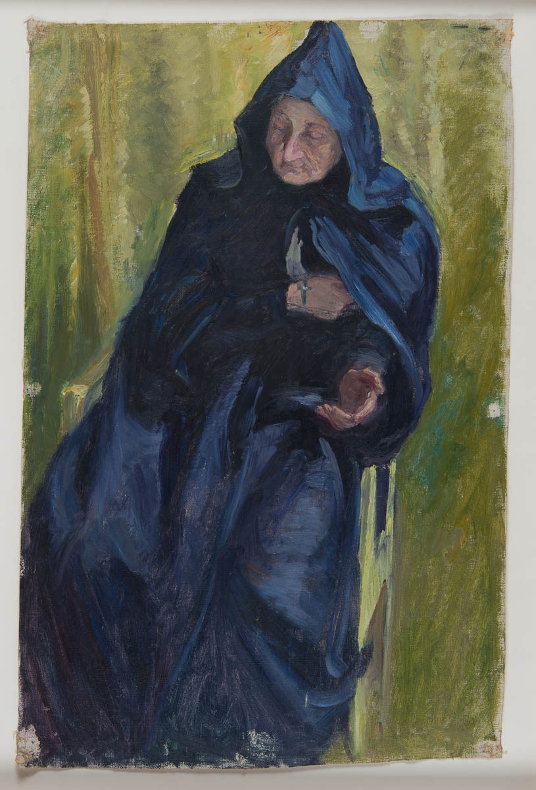
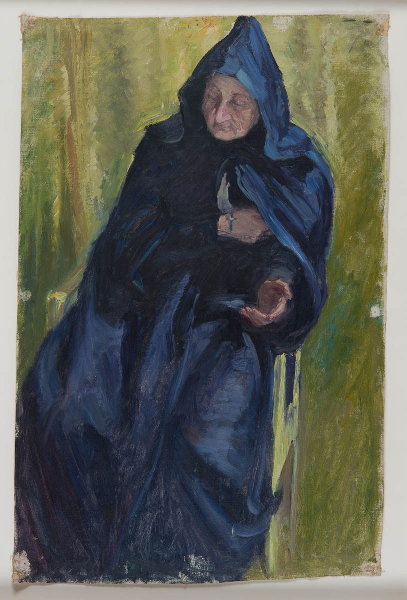

The fourth child of Captain Victor af Klint, a Swedish naval commander, and Mathilda af Klint (née Sonntag), Hilma af Klint spent summers with her family at their manor Hanmora on the island of Adelsö in Lake Mälaren. In these idyllic surroundings Hilma came into contact with nature at an early stage in her life; and this deep association with natural forms was to be an inspiration in her work. Later in life, Hilma af Klint came to live on a permanent basis at Munsö, an island next to Adelsö.
From her family, Hilma af Klint inherited a great interest for mathematics and botany. She showed an early ability in visual art, and after the family moved to Stockholm, she studied at Tekniska skolan in Stockholm (Konstfack today), where she learned portraiture and landscape painting. She was admitted at the Royal Academy of Fine Arts at the age of twenty. During the years 1882–1887 she studied mainly drawing, and portrait- and landscape painting. She graduated with honors, and was allocated a scholarship in the form of a studio in the so-called "Atelier Building" (Ateljébyggnaden), owned by The Academy of Fine Arts in the crossing between Hamngatan and Kungsträdgården in central Stockholm. This was the main cultural hub in the Swedish capital at that time. The same building also held Blanch's Café and Blanchs Art Gallery, where the conflict stood between the conventional art view of the Academy of Fine Arts, and the opposition movement of the "Art Society" (Konstnärsförbundet), inspired by the French En Plein Air painters. Hilma af Klint began working in Stockholm, gaining recognition for her landscapes, botanical drawings, and portraits.
Her conventional painting became the source of financial income. But her 'life's work' remained a quite separate practice.
Sources: artforum ny times interior design